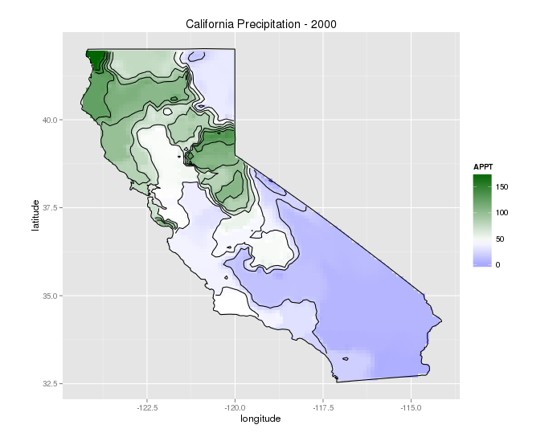

Types of weighting
Stata makes this very easy by just attaching aweight or pweight to the end of the regression line. However, in R, it requires a bit of understanding for each packages. The lm() function only does analytic weighting, but for sampling weights, the survey package is used to to build a survey design object and run glm(). By default, the survey package uses sampling weights.
Sample data.frame (from dput)
data <- structure(list(lexptot = c(9.1595012302023, 9.86330744180814,
8.92372556833205, 8.58202430280175, 10.1133857229336), progvillm = c(1L,
1L, 1L, 1L, 0L), sexhead = c(1L, 1L, 0L, 1L, 1L), agehead = c(79L,
43L, 52L, 48L, 35L), weight = c(1.04273509979248, 1.01139605045319,
1.01139605045319, 1.01139605045319, 0.76305216550827)), .Names = c("lexptot",
"progvillm", "sexhead", "agehead", "weight"), class = c("tbl_df",
"tbl", "data.frame"), row.names = c(NA, -5L))Analytic Weights
lm.analytic <- lm(lexptot ~ progvillm + sexhead + agehead, data = data, weight = weight)
summary(lm.analytic)Output
Call:
lm(formula = lexptot ~ progvillm + sexhead + agehead, data = data,
weights = weight)
Weighted Residuals:
1 2 3 4 5
9.249e-02 5.823e-01 0.000e+00 -6.762e-01 -1.527e-16
Coefficients:
Estimate Std. Error t value Pr(>|t|)
(Intercept) 10.016054 1.744293 5.742 0.110
progvillm -0.781204 1.344974 -0.581 0.665
sexhead 0.306742 1.040625 0.295 0.818
agehead -0.005983 0.032024 -0.187 0.882
Residual standard error: 0.8971 on 1 degrees of freedom
Multiple R-squared: 0.467, Adjusted R-squared: -1.132
F-statistic: 0.2921 on 3 and 1 DF, p-value: 0.8386Sampling Weights (IPW)
data$X <- 1:nrow(data) # Create unique id
# Build survey design object with unique id, ipw, and data.frame
des1 <- svydesign(id = ~X, weights = ~weight, data = data)
# Run glm with survey design object
prog.lm <- svyglm(lexptot ~ progvillm + sexhead + agehead, design=des1)Output :
Call:
svyglm(formula = lexptot ~ progvillm + sexhead + agehead, design = des1)
Survey design:
svydesign(id = ~X, weights = ~weight, data = data)
Coefficients:
Estimate Std. Error t value Pr(>|t|)
(Intercept) 10.016054 0.183942 54.452 0.0117 *
progvillm -0.781204 0.640372 -1.220 0.4371
sexhead 0.306742 0.397089 0.772 0.5813
agehead -0.005983 0.014747 -0.406 0.7546
---
Signif. codes: 0 ‘***’ 0.001 ‘**’ 0.01 ‘*’ 0.05 ‘.’ 0.1 ‘ ’ 1
(Dispersion parameter for gaussian family taken to be 0.2078647)
Number of Fisher Scoring iterations: 2Note that the coefficients are the same, but the standard errors have been reduced from the analytic weighting.
Some prelimimary research has lead me into the world of Spatial Plotting in R. Below is a small example of average precipitation in California during 2000. The code consists of building spatial objects, interpolation of data points, and then plotting with ggplot2. For simplicity, the data has already been manipulated, tidied and provided below. Source for data is from PRISM
Data set (164 mb) : CA_2000_appt.csv
R Code : California.R
Libraries
library(plyr) # Data manipulation
library(dplyr) # Data manipulation
library(ggplot2) # Final Plot
library(automap) # For Spacial Data
library(akima) # For interpolationCreating Spatial Object
The first step is to build a spatial object consisting of California latitude and longitude coordinates for the entire state. This will allow the object to be plotted correctly with the precipitation spatial points built below.
CA_2000_appt <- read.csv("CA_2000_appt.csv")
sub_data = as.data.frame(CA_2000_appt)
coord_vars = c("latitude","longitude")
data_vars = setdiff(colnames(sub_data), coord_vars) # All colnames except for Lat/Long
sp_points = SpatialPoints(sub_data[,coord_vars]) # All lat/long in Spatial Point format
sp_df = SpatialPointsDataFrame(sp_points, # Spatial Data Frame of lat/long and remaining cols
sub_data[,data_vars,drop=FALSE])
regions <- c("california")
map_base_data <- filter(map_data("state"), region == "california") # Get California lat/long coord.
map_base_data <- rename(map_base_data, longitude = long) # Rename columns
map_base_data <- rename(map_base_data, latitude = lat)
# Creates a Spatial Polygon for each state with lat/long
# ---> Used for plotting the map
state_regions = function(x) { # Gets lat/long for each state to build Spatial Polygon
state = unique(x$region)
print(state)
Polygons(list(Polygon(x[,c("latitude","longitude")])),ID=state)
}
state_pg = SpatialPolygons(dlply(map_base_data, # Builds a Spatial Polygon of all state/regions
.(region),
state_regions)) Spline Interpolation with akima package
Next, additional data points need to be interpolated from the given values in the data.frame in order to increase the clarity on the map. The steps for this section of code include interpolating the data, melting each lat/long for each interpolated appt, building the data.frame, and merging the California Spatial data.frame from above, with the original appt and interpolated points.
fld = with(sub_data, interp(x = longitude, y = latitude, z = APPT, duplicate="median",
xo=seq(min(map_base_data$longitude),
max(map_base_data$longitude), length = 100),
yo=seq(min(map_base_data$latitude),
max(map_base_data$latitude), length = 100),
extrap=TRUE, linear=FALSE))
melt_x = rep(fld$x, times=length(fld$y)) # Pull out longitude values from list
melt_y = rep(fld$y, each=length(fld$x)) # Pull out latitude values from list
melt_z = as.vector(fld$z) # Pull out appt values from list
level_data = data.frame(longitude=melt_x, # Build data.frame
latitude=melt_y,
APPT=melt_z)
interp_data = na.omit(level_data) # Remove all NA values
grid_points = SpatialPoints(interp_data[,2:1]) # Build Spatial Points into object
in_points = !is.na(over(grid_points,state_pg)) # Logical determining points inside all regions
inside_points = interp_data[in_points, ] # Removes all points outside of Spatial PolygonsPlot Spatial Objects with ggplot2
And finally, build the aesthetics for ggplot2, overlay appt, contour appt concentrations, title plot, and apply border.
map_base_aesthetics = aes(x=longitude, y=latitude, group=group) # Aesthetics for ggplot2
map_base = geom_polygon(data=map_base_data, map_base_aesthetics) # Map Base
borders = geom_polygon(data=map_base_data, # Draws boundaries
map_base_aesthetics,
color="black", fill=NA)
ggplot(data=inside_points, aes(x=longitude, y=latitude)) + # Setup ggplot2
geom_tile(aes(fill=APPT)) + # Initial overlay of appt
stat_contour(aes(z=APPT)) + # Create contours for concentrations
coord_equal() + # Equalize plots
scale_fill_gradient2(low="blue", mid="white",high="darkgreen", # Set colors for low, mid, high
midpoint=mean(inside_points$APPT)) +
ggtitle("California Precipitation - 2000") + # Plot title
borders # Draw California borderimage: 
References
Thanks to @kdauria on Stack Exchange for helping with the code for interpolation and countour plots.
CRAN Task View: Analysis of Spatial Data
Introduction to Visualising Spatial Data in R
The R Book - Michael J. Crawley
Examples